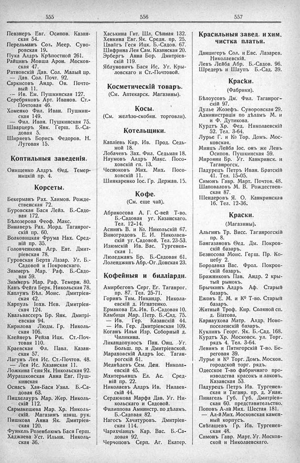

Лист источника 317
Скан

Распознанный текст
555
Певзнеръ Евг. Осипов. Казан-
ская 54.
Перельманъ Сол. Меер. Суво-
ровская 19.
Пука Алдръ Крѣпостной 261.
Райцинъ Мовша Арон. Москов-
ская 47.
Ратновскій Дав. Сол. Малый пр.
— Дав. Сол. Почт. 92.
Саркисовъ Андр. Ов. Почто-
вый 11.
-- Ив. Ем. Пушкинская 127.
Серебряковъ Арт. Иванов. Ст.-
Почтовая 46.
Хоменко Фил. Иван. Пушкин-
ская 149.
— Фил. Иван. Пушкинская 75.
Шварцеръ Янк. Герш. Б.-Са-
довая 5.
Ширяевъ Борисъ Федоров. Н.
Луговая 15.
Коптильныя заведенія.
Онищенко Алдръ Ѳед. Темер-
ницкій пр. 4.
Корсеты.
Бекерманъ Рах. Хаимов. Рожде-
ственская 72.
Буровская Бася Лейз. Б.-Садо-
вая 172.
Бѣлозерова Феоф. Макс.
Винаверъ Рах. Морд. Таганрог-
скій пр. 60.
Волковицкая Фрума Нах. Сред-
ній пр. 35.
Головченкова Агр. Евт. Дмит-
ріевская 78.
Гуровская Берта Лазар. Уг. Б.-
Садовой и Покровскаго.
Зиммеръ Мар. Раф. Б.-Садо-
вая 59.
Зиммеръ Мар. Раф. Темерн. 80.
Канъ Фейга Берк. Никольская 78.
Каплунъ Бѣл. Моис. Дмитріев-
ская 42.
Карпуль Іохв. Нев. Дмитріев-
ская 124.
Квальвассеръ Бр. Янк. Дмитрі-
евская 94.
Кирилова Людм. Гр. Николь-
ская 106.
Клейнеръ Рейза Ицк. Ст.-Поч-
товая 110.
Краевская Фл. Павл. Казан-
ская 57.
Лагунъ Лея Ис. Ст.-Почтов. 48.
— Лея Ис. Казанская 11.
Ложкина Геня Як. Никольская 92.
Мурашковская Анна Евг. Пуш-
кинская
Оснасъ Хая-Бася Узил. Б.-Са-
довая 63.
Пицхелауръ Мар. Жер. Николь-
скій 112.
Сармакешева Мар. Хр. Николь-
скій. Магазинъ изящ. рук.
Пишкова Анна Як. Дмитріев-
ская 120.
Функель Розенблюмъ Бася Герш.
Хаджаева Уст. Ильин. Николь-
ская 36.
556
Хаськина Гит. Шл. Сѣнная 132.
Хенкина Евг. Як. Средн. пр. 25.
Цвайгъ Геся Ицк. Б.-Садов. 67.
Шифрина Лея Сам. Казанская 20.
Эрбергъ Анна Бор. Дмитріев-
скій 119.
Яблуновичъ Бася Ис. Уг. Кры-
ловскаго и Ст.-Почтовой.
Косметическій товаръ.
(См. Аптекарск. Магазины).
Косы.
(См. желѣзо-скобян. торговли).
Котельщики.
Капліевъ Кир. Ив. Прод. Седь-
мой 18.
Лобачевъ Зах. Фил. Седьмая 18.
Наумовъ Алдръ Макс. Посо-
ховскій сп. 13.
Чесноковъ Мих. Мих. Посо-
ховскій 11.
Шинкаренко Іос. Гр. Держав. 15.
Кофе.
(См. еще чай).
Абрикосова А. Г. С-вей Т-во.
Б.-Садовая уг. Казанскаго.
Тел. 12-14.
Аснинъ В. и Ко. Никольскій 67.
Виноградовъ Е. И. Николаев-
скій уг. Садовой. Тел. 23-53.
Изюмскій Ив. Вас. Тургенев-
ская 1.
Люледжанъ Бр. Б.-Садовая 61.
Лоленджанъ Абр.-Ог. Донская 23.
Кофейныя и билліардн.
Амирбеговъ Серг. Ег. Таганрог.
пр. 87. Тел. 25-71.
Горинъ Тим. Никандр. Никола-
евскій д. Игнатенко.
Ермакова Ел.-Ив. Б.-Садовая 10.
Камбици Мар. Петр. Б.-Сад. 75.
— Ив. Гер. Казанскій 44.
— Ив. Гер. Дмитріевская 109.
Коганъ Илья Изр. Соборный д.
Чиликина.
Ликандопулосъ Пан. Онц. Уг.
Больш. пр. и Дмитріевской.
Мараховскій Алдръ Іос. Таган-
рогскій 61.
Медвѣдевъ Сем. Ден. Никола-
евскій 45.
Мхитерьянцъ Ел. Ас. Сред-
ній пр. 22.
Николаевъ Алдръ Ив. Нилаев-
скій 44.
Сердюкова Марфа Дав. Уг. Ни-
кольскаго и Садовой.
Филиппова Аминистр. по дѣламъ.
Б.-Садовая 82.
Нагосъ Хачатуровъ. Дмитріев-
ская 114.
Чарахчіянцъ Кар. Вас. Б.-Са-
довая 92.
Черчоповъ Серп. Аг. Екатер.
557
Красильныя завед. и хим.
чистка платья.
Данцигеръ Сол. и Евс. Лазарев.
Николаевскій.
Левъ Лейба Абр. Б.-Садов. 96.
Шредеръ и Шаупъ Б.-Сад. 39.
Краски.
(Фабрики).
Бѣлоусовъ Дм. Фил. Таганрог-
скій 97.
Дулье Жозефъ. Суворовская 29.
Администрація по дѣламъ М. и
и Ф. Дутикова.
Курдтъ Хр. Фед. Николаевскій
52. Тел. 3-64.
Лурье Г. и Ко Тор. Домъ. Мос-
ковская.
Минцъ Лейба Іос. онъ же Левъ
Осипов. Пушкинская 59.
Мирояни Бр. Уг. Канкринск. и
Таганрогск.
Падурецъ Петръ Иван. Братскій
41. Тел. 15-05.
Симонъ Гавр. Март. Почтов. 48.
Шаповаловъ М. В. Рождествен-
ская 87.
Шендеровъ Я. О. Канкринская
16. Тел. 12-36.
Краски.
(Магазины).
Альгинъ Тр. Висс. Таганрогскій
пр. 8.
Бангазановъ Ѳед. Дм. Покров-
скій базаръ.
Безносова Моис. Герш. Пр. Ко-
цебу 2.
Бородавка Вас. Фрол. Покров-
скій базаръ.
Бражниковъ Пав. Андр. 2 кры-
тый рынокъ.
Брычкинъ Алдръ Аф. Старый
базаръ.
Ежовъ Е. М. и К0 Т-во. Старый
базаръ.
Житный Троф. Кир. Соляной сп.
д. Біатова,
Карнаухова Матр. Алдр. Ново-
поселенскій базаръ.
Куклинъ Георг. Як. Б.-Сад. 168.
Курдтъ Хр. Московск. ул. Торг.
рядъ 4. Тел. 3-64.
Левинъ и Пятигорскій Т-во. Бе-
реговая 39.
Лурье и К0 Торг. Домъ. Москов.
городской торг. рядъ.
Одесское Т-во фабричнаго про-
изводства красокъ и лаковъ.
Казанская 53.
Падурецъ Петръ Ив. Тургенев-
ская и Таганр. пр. д. Унан.
Пинагель Губ. Губ. Дмитріев-
ская 60. представительство.
Поповъ А-лй Мих. Шестая 181.
— Ал-й Мих. Московская камен-
ный корпусъ.
Свѣташевъ Гр. Ив. Тургенев-
ская 48.
Симонъ Гавр. Март. Уг. Москов-
ской и Николаевскаго.